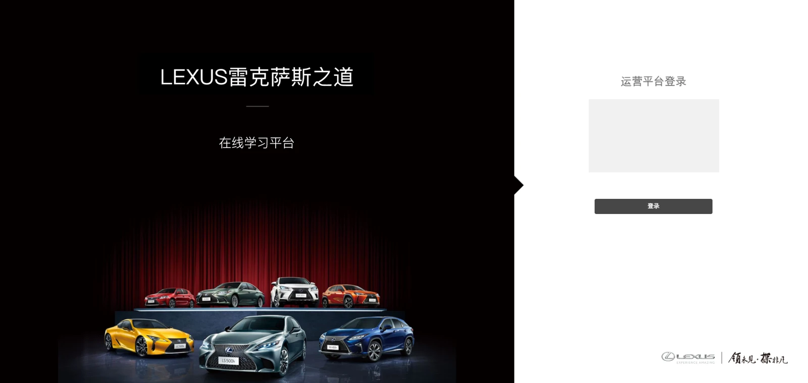
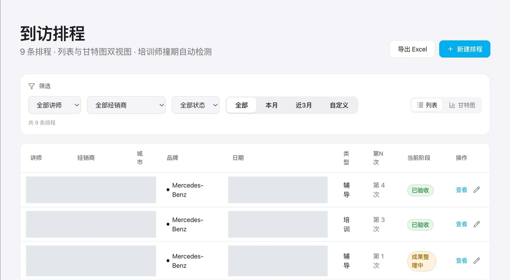
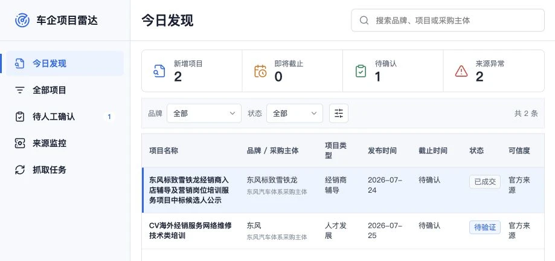

咨询总监（AI 产品方向）
懂业务的没我懂 AI，
懂 AI 的没我懂业务。
我在汽车行业做了 19 年，做过经销商开业辅导、售后运营和数字化咨询。现在负责汽车业务的 AI 产品交付，从梳理一线流程和数据，到协调业务、IT 和供应商推进落地。
- 19年汽车行业经验
- 20+ 家安永期间服务的车企

01
我是谁
我的工作从汽车渠道一线开始，后来做主机厂的开业辅导与运营标准，也在安永做了六年多的售后运营和数字化咨询。
我习惯先了解门店和总部各自怎么工作，再和团队判断该改流程、用现有系统，还是引入 AI。
在 AI 项目里，我把业务需求拆成团队可以实施和验证的任务，协调业务、IT 和供应商推进交付。
AI 不是魔法棒，是放大镜。你业务逻辑清晰，它放大你的优势；你逻辑混乱，它只会把混乱放大。
不是转行，是进化。
AI + 咨询
用咨询把业务问题和目标定清楚，用 AI 更快把方案做成一线能试用的工具。
相比方案定稿后再启动开发，我把原型和试用提前到咨询过程中。业务团队可以早一点看到方案怎么用，发现问题就及时调整，减少后期反复沟通和返工。
03
项目案例


04
我的想法
关于汽车行业、数字化、AI 落地与运营系统的判断。先理流程，再谈 AI。
-
很多数字化项目，从立项开始就注定失败
系统上线不等于业务变简单。多数项目败在跳过了流程梳理这一步：用一套新系统固化了一套没人真正执行的流程。
-
AI 最大的价值，不是替代人
大模型读过所有报告，但没去过现场。AI 真正的价值在标准化、可复用的执行层，而非模糊判断与复杂决策。
-
先理流程，再谈 AI
工具解决的是效率，流程解决的是正确。顺序错了，AI 也救不了：先理流程，再上系统，最后才是 AI。
-
经销商真正的瓶颈，不在 KPI 里
售后、培训、客户体验之间存在大量隐性流程，它们不写在 KPI 里，却决定了门店真实效率。
-
培训完成情况之外，还要看岗位表现
课程完成情况可以反映学习进度。评估培训能否帮助员工胜任岗位，还要看他们在实际工作中的表现。
-
汽车行业，是 AI 落地最被低估的战场
链条长、角色多、数据散。汽车行业天然适合 AI 落地，但前提是先把流程拆清楚。
05
常见问题
你是谁？
我是麻明，在汽车行业工作了 19 年，做过经销商运营、培训和客户体验项目，也独立开发业务工具。
06
经历
- 2025.02 至今港泓咨询咨询总监（AI 产品方向）把 AI 做进培训和客户体验。
- 2024.04 - 2025.02易车高级产品运营（AI 方向）AI 混剪视频产品，从需求做到落地。
- 2017.12 - 2024.04安永（中国）企业咨询高级项目经理（汽车行业）六年多，服务 20 多家车企的售后与数字化。
- 2014.12 - 2017.12东风英菲尼迪项目经理定新店验收标准，建立经销商运营标准。
- 2011.11 - 2014.12梅赛德斯-奔驰项目经理搭辅导体系，带新店从筹备走到运营。
- 2011 年之前一汽丰田新店标准及新业务导入把品牌标准导进新开的店。
- 2007 年起比亚迪西非市场渠道拓展在西非做渠道，参与新市场进入。
- 2025 年起自主开发独立开发者搭建智能体和自动化工具，处理日常重复任务。
- 教育
- 中国农业大学，国际经济与贸易，本科。
交流项目需求
如果你正在做经销商运营改善、培训数字化或客户体验项目，可以带着现有流程、遇到的卡点或试点设想来聊。